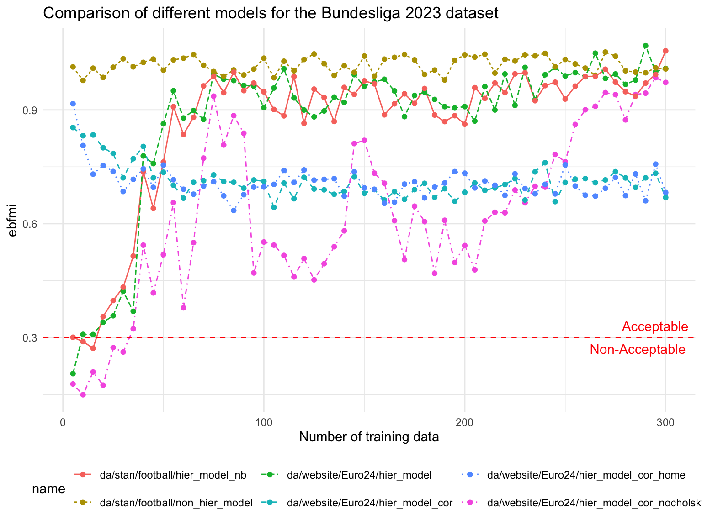

df =read.csv('~/Documents/GitHub/da/website/Euro24/eval_performance_bundesliga_23.csv') df <-mutate(df, name =sub("^.*/", "", name))#Add additional run with home advantage df2 =read.csv('~/Documents/GitHub/da/website/Euro24/eval_performance_bundesliga_23_home_adv.csv') df2 <-mutate(df2, name =sub("^.*/", "", name)) df <-rbind(df, df2)# Add additional run with 18 games ahead df3 =read.csv('~/Documents/GitHub/da/website/Euro24/eval_performance_bundesliga_23_18Ahead.csv') df = df3print("Using 24_18Ahead that means all data is averaged 18 games ahead.")
[1] "Using 24_18Ahead that means all data is averaged 18 games ahead."
We use the negative log likelihood (NLL) as a measure of the predictive performance of the models. The lower the NLL, the better the model. However, strictly speaking it is the negative log posterior predictive density (divided by \(n\)) evaluated at the \(n\) games after the training data.
# Assuming df is your dataframe df %>%filter(type =='NLL_PRED') %>%ggplot(aes(x = ntrain, y = res, color = name)) +geom_line() +geom_point() +theme_minimal() +labs(title ='Comparison of different models for the Bundesliga 2023 dataset', x ='Number of training data', y ='Negative Log Likelihood' ) +#ylim(2.9, 3.5) +#xlim(0,100) +theme(legend.position ="top") +coord_cartesian(clip ="off") # Allow lines to go outside the plot area
Observations
Especially for small training data, the hierarchical model performs better than the non-hierarchical model.
The Correlated Dataset model performs slightly better than non-correlated one
There is partically no difference in predictive performance when comparing the model with and without Cholesky decomposition.
The negative binomial model performs comparable to Poisson model.
Comparison of predicted vs PSIS-LOO
Code
df %>%filter(type %in%c('NLL_PRED', 'NLL_PSIS', 'NLL_PRED_STAN')) %>%ggplot(aes(x = ntrain, y = res, color = type)) +geom_line(aes(linetype = type)) +geom_point() +theme_minimal() +labs(title ='Comparison of different models for the Bundesliga 2023 dataset',x ='Number of training data', y ='Negative Log Likelihood' ) +ylim(2.5, 4) +facet_wrap(~name) +theme(legend.position ="bottom") +coord_cartesian(clip ="off") # Allow lines to go outside the plot area
Observations
NNL for win, draws and losses
Code
df %>%filter(type %in%c('NLL_RESULTS', 'NLL_BOOKIE')) %>%ggplot(aes(x = ntrain, y = res, color = type)) +geom_line(aes(linetype = name)) +geom_point() +theme_minimal() +labs(title ='Comparison of different models for the Bundesliga 2023 dataset',x ='Number of training data', y ='Negative Log Likelihood' ) +ylim(0.75, 1.5) +theme(legend.position ="bottom") +coord_cartesian(clip ="off") # Allow lines to go outside the plot area
Observations
The NLL for the bookie is always better than the NLL of the models, so we should not bet.
Ranked probability score
Code
df %>%filter(type %in%c('RPS', 'rps_booki')) %>%ggplot(aes(x = ntrain, y = res, color = type)) +geom_line(aes(linetype = name)) +geom_point() +theme_minimal() +labs(title ='Comparison of different models for the Bundesliga 2023 dataset',x ='Number of training data', y ='Ranked Probability Score' ) +#ylim(0.75, 1.5) +theme(legend.position ="bottom") +coord_cartesian(clip ="off") # Allow lines to go outside the plot area
df %>%filter(type %in%c('BET_RETURN')) %>%ggplot(aes(x = ntrain, y = res, color = name)) +geom_line(aes(linetype = name)) +geom_point() +theme_minimal() +labs(title ='Comparison of different models for the Bundesliga 2023 dataset',x ='Number of training data', y ='Betting Returns' ) +#ylim(0.75, 1.5) +theme(legend.position ="bottom") +coord_cartesian(clip ="off") # Allow lines to go outside the plot area
Observations
We see quite some fluctuation in the betting return. Since the NLL shows that the odds from the booki are always better then the NLLs of the models we should not bet.
Technical Details
Code
df %>%filter(type %in%c('MIN_SUM_PROB')) %>%ggplot(aes(x = ntrain, y = res, color = name)) +geom_line(aes(linetype = name)) +geom_point() +theme_minimal() +labs(title ='Comparison of different models for the Bundesliga 2023 dataset',x ='Number of training data', y ='Sum of Probabilities from 0 to 10 goals (should be 1)' ) +ylim(0.75, 1.01) +theme(legend.position ="bottom") +coord_cartesian(clip ="off") # Allow lines to go outside the plot area
Code
df %>%filter(type %in%c('num_divergent')) %>%ggplot(aes(x = ntrain, y = res, color = name)) +geom_line(aes(linetype = name)) +geom_point() +theme_minimal() +labs(title ='Comparison of different models for the Bundesliga 2023 dataset',x ='Number of training data', y ='Number of Divergent Transitions (sqrt scale)' ) +theme(legend.position ="bottom") +scale_y_sqrt() +coord_cartesian(clip ="off") # Allow lines to go outside the plot area
Code
df %>%filter(type %in%c('ebfmi')) %>%ggplot(aes(x = ntrain, y = res, color = name)) +geom_line(aes(linetype = name)) +geom_point() +theme_minimal() +labs(title ='Comparison of different models for the Bundesliga 2023 dataset',x ='Number of training data', y ='ebfmi' ) +theme(legend.position ="bottom") +geom_hline(yintercept =0.3, linetype ="dashed", color ="red") +annotate("text", x =Inf, y =0.33, label ="Acceptable", hjust =1.1, color ="red") +annotate("text", x =Inf, y =0.27, label ="Non-Acceptable", hjust =1.1, color ="red") +coord_cartesian(clip ="off") # Allow lines to go outside the plot area

Source Code
---title: "Comparison of different models Bundesliga Dataset"author: "Oliver Dürr"format: html: toc: true toc-title: "Table of Contents" toc-depth: 3 fig-width: 6 fig-height: 3 code-fold: true code-tools: true mathjax: true # pdf: # toc: true # toc-title: "Table of Contents" # filters: #- webr---```{r, echo=FALSE, eval=TRUE, message=FALSE, warning=FALSE} library(tidyverse) library(kableExtra) set.seed(42)```The experiments take some time to run, therefore we used the R-Script to producte the results <https://github.com/oduerr/da/blob/master/website/Euro24/eval_performance_runner.R>.## Loading the data```{r, asis=TRUE} df = read.csv('~/Documents/GitHub/da/website/Euro24/eval_performance_bundesliga_23.csv') df <- mutate(df, name = sub("^.*/", "", name)) #Add additional run with home advantage df2 = read.csv('~/Documents/GitHub/da/website/Euro24/eval_performance_bundesliga_23_home_adv.csv') df2 <- mutate(df2, name = sub("^.*/", "", name)) df <- rbind(df, df2) # Add additional run with 18 games ahead df3 = read.csv('~/Documents/GitHub/da/website/Euro24/eval_performance_bundesliga_23_18Ahead.csv') df = df3 print("Using 24_18Ahead that means all data is averaged 18 games ahead.") df_raw = read.csv('~/Documents/GitHub/da/website/Euro24/bundesliga2023.csv') head(df_raw) %>% kable()```## Model ComparisonsWe use the negative log likelihood (NLL) as a measure of the predictive performance of the models. The lower the NLL, the better the model. However, strictly speaking it is the negative log posterior predictive density (divided by $n$) evaluated at the $n$ games after the training data.$$\text{NLL} = -\frac{1}{n}\sum_{i=1}^n \log p(y_i | x_i, \theta)$$```{r hier-vs-non, fig.width=8, fig.height=6, warning=FALSE, message=FALSE} # Assuming df is your dataframe df %>% filter(type == 'NLL_PRED') %>% ggplot(aes(x = ntrain, y = res, color = name)) + geom_line() + geom_point() + theme_minimal() + labs( title = 'Comparison of different models for the Bundesliga 2023 dataset', x = 'Number of training data', y = 'Negative Log Likelihood' ) + #ylim(2.9, 3.5) + #xlim(0,100) + theme(legend.position = "top") + coord_cartesian(clip = "off") # Allow lines to go outside the plot area```### Observations- Especially for small training data, the hierarchical model performs better than the non-hierarchical model. - The Correlated Dataset model performs slightly better than non-correlated one- There is partically no difference in predictive performance when comparing the model with and without Cholesky decomposition. - The negative binomial model performs comparable to Poisson model.## Comparison of predicted vs PSIS-LOO```{r pred-vs-loo, fig.width=8, fig.height=6, warning=FALSE, message=FALSE} df %>% filter(type %in% c('NLL_PRED', 'NLL_PSIS', 'NLL_PRED_STAN')) %>% ggplot(aes(x = ntrain, y = res, color = type)) + geom_line(aes(linetype = type)) + geom_point() + theme_minimal() + labs( title = 'Comparison of different models for the Bundesliga 2023 dataset', x = 'Number of training data', y = 'Negative Log Likelihood' ) + ylim(2.5, 4) + facet_wrap(~name) + theme(legend.position = "bottom") + coord_cartesian(clip = "off") # Allow lines to go outside the plot area```### Observations## NNL for win, draws and losses ```{r resultbases, fig.width=8, fig.height=6, warning=FALSE, message=FALSE} df %>% filter(type %in% c('NLL_RESULTS', 'NLL_BOOKIE')) %>% ggplot(aes(x = ntrain, y = res, color = type)) + geom_line(aes(linetype = name)) + geom_point() + theme_minimal() + labs( title = 'Comparison of different models for the Bundesliga 2023 dataset', x = 'Number of training data', y = 'Negative Log Likelihood' ) + ylim(0.75, 1.5) + theme(legend.position = "bottom") + coord_cartesian(clip = "off") # Allow lines to go outside the plot area```### Observations- The NLL for the bookie is always better than the NLL of the models, so we should not bet.### Ranked probability score```{r result rps, fig.width=8, fig.height=6, warning=FALSE, message=FALSE} df %>% filter(type %in% c('RPS', 'rps_booki')) %>% ggplot(aes(x = ntrain, y = res, color = type)) + geom_line(aes(linetype = name)) + geom_point() + theme_minimal() + labs( title = 'Comparison of different models for the Bundesliga 2023 dataset', x = 'Number of training data', y = 'Ranked Probability Score' ) + #ylim(0.75, 1.5) + theme(legend.position = "bottom") + coord_cartesian(clip = "off") # Allow lines to go outside the plot area```Averaged for the complete season:```{r rps_season} dfres = df %>% filter(type %in% c('RPS', 'rps_booki')) %>% group_by(name, type) %>% summarise(rps = mean(res)) rps_booki = dfres %>% filter(type == 'rps_booki') dfres2 = dfres %>% filter(type == 'RPS') %>% select(name, rps) dfres2 = rbind(dfres2, rps_booki[1,]) # Sort by RPS dfres2 = dfres2[order(dfres2$rps),] kable(dfres2)```## Betting Returns```{r betting, fig.width=8, fig.height=6, warning=FALSE, message=FALSE} df %>% filter(type %in% c('BET_RETURN')) %>% ggplot(aes(x = ntrain, y = res, color = name)) + geom_line(aes(linetype = name)) + geom_point() + theme_minimal() + labs( title = 'Comparison of different models for the Bundesliga 2023 dataset', x = 'Number of training data', y = 'Betting Returns' ) + #ylim(0.75, 1.5) + theme(legend.position = "bottom") + coord_cartesian(clip = "off") # Allow lines to go outside the plot area```### ObservationsWe see quite some fluctuation in the betting return. Since the NLL shows that the odds from the booki are always better then the NLLs of the models we should not bet. ## Technical Details```{r min_sum, fig.width=8, fig.height=6, warning=FALSE, message=FALSE} df %>% filter(type %in% c('MIN_SUM_PROB')) %>% ggplot(aes(x = ntrain, y = res, color = name)) + geom_line(aes(linetype = name)) + geom_point() + theme_minimal() + labs( title = 'Comparison of different models for the Bundesliga 2023 dataset', x = 'Number of training data', y = 'Sum of Probabilities from 0 to 10 goals (should be 1)' ) + ylim(0.75, 1.01) + theme(legend.position = "bottom") + coord_cartesian(clip = "off") # Allow lines to go outside the plot area``````{r num_divergent, fig.width=8, fig.height=6, warning=FALSE, message=FALSE} df %>% filter(type %in% c('num_divergent')) %>% ggplot(aes(x = ntrain, y = res, color = name)) + geom_line(aes(linetype = name)) + geom_point() + theme_minimal() + labs( title = 'Comparison of different models for the Bundesliga 2023 dataset', x = 'Number of training data', y = 'Number of Divergent Transitions (sqrt scale)' ) + theme(legend.position = "bottom") + scale_y_sqrt() + coord_cartesian(clip = "off") # Allow lines to go outside the plot area ``````{r , fig.width=8, fig.height=6, warning=FALSE, message=FALSE}df %>% filter(type %in% c('ebfmi')) %>% ggplot(aes(x = ntrain, y = res, color = name)) + geom_line(aes(linetype = name)) + geom_point() + theme_minimal() + labs( title = 'Comparison of different models for the Bundesliga 2023 dataset', x = 'Number of training data', y = 'ebfmi' ) + theme(legend.position = "bottom") + geom_hline(yintercept = 0.3, linetype = "dashed", color = "red") + annotate("text", x = Inf, y = 0.33, label = "Acceptable", hjust = 1.1, color = "red") + annotate("text", x = Inf, y = 0.27, label = "Non-Acceptable", hjust = 1.1, color = "red") + coord_cartesian(clip = "off") # Allow lines to go outside the plot area```